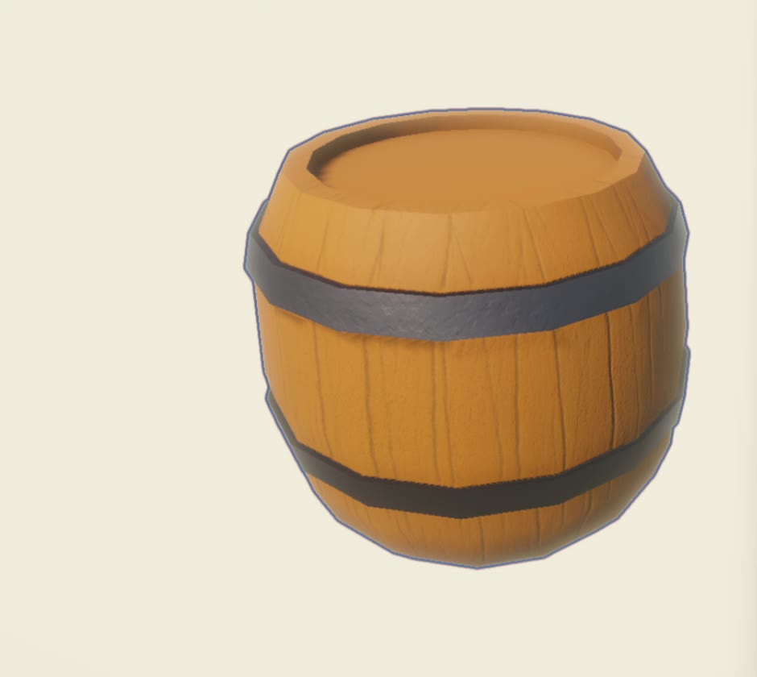

Everything Kelpo 3D Multitool does, one tab at a time. Use the chapter list to jump around. The fine print sits behind the more detail folds, so you only open it when you need it.
New to the tool? The Getting started tutorial walks through a whole prop with clips. Keys look like this and buttons in the Kelpo window look like this.
version 1.3.0
Unity 2022.3 LTS or newer
Built-in · URP · HDRP
also in the package as Markdown

made start to finish in Unity
start here
1
Install
Import the package from the Asset Store (Window›Package Manager›My Assets), or a .unitypackage through Assets›Import Package›Custom Package…
Everything lands in Assets/Kelpo/3DMultitool/. No other packages, no project settings to change. You can move the Kelpo folder anywhere under Assets.
Open the tool: Tools›Kelpo›3D Multitool›Open 3D Multitool, or Ctrl+Shift+K (Cmd+Shift+K on a Mac).
Change the open shortcut
Edit›Shortcuts, search for “Kelpo”.
Custom Model keys
Saved to ProjectSettings/Kelpo3DMultitoolShortcuts.json. Delete the file to get the defaults back.
Uninstall
Delete Assets/Kelpo/3DMultitool/. Everything you exported keeps working: meshes, textures, materials and prefabs are plain Unity assets.
2
Quick start: a prop in ten minutes
The short version of the whole trip. The Getting started tutorial shows the same thing in detail, with clips.
Model. Press Cube. You're in Face mode: click a face, press W and Shift+drag the gizmo to extrude. 123 switch Vertex, Edge and Face mode. Block out a crate, a pillar, anything.
Sculpt (optional). Subdivide once or twice, then Draw, Inflate or Flatten for organic detail. Hold Shift to smooth, Ctrl to carve.
Retopo (optional, after heavy sculpting). Brush green over what matters, set Keep % to about 25, Preview reduction, then Apply.
UVs.Unique unwrap.
Paint. Resolution 1024, Start painting. In Material mode one stroke lays down color, metallic and smoothness. Try the Image tip for dirt, and bake ambient occlusion under Maps & bakes.
Colliders.Generate collider, or draw one.
Export. Name it, Export as prefab…, pick a folder inside Assets. You get the mesh, PNG maps, material, collider and a prefab.
3
How it fits together
The tabs run top to bottom in the order you'll usually use them, and each one feeds the next. You can jump around.
Model
Block out the shape, or convert an imported mesh.
Sculpt
Organic detail: rocks, bark, cliffs. Subdivide as needed.
Retopo
Mark what to keep, then bring the triangle count down.
UVs
Unique unwrap for painting, or box projection for tiling materials.
Paint
Color, metallic, smoothness and height, in layers. Height becomes a normal map.
Header.? turns routine hints on and off (warnings always stay). The book button opens this manual in the Project window.
Object card. The selected object and its state: type, UVs, material, whether paint is saved. Its ⋯ menu holds extra options.
Cards. Related controls are grouped. A folded card shows a summary of its values. One blue button marks the main action of the screen.
Tools. They follow the current mode and task.
Folded extras for things you need less often.
Footer. Selection or triangle count and a Next link. In Paint it holds Undo stroke, End session and Save material + textures….
The rail. The seven tabs in order. Narrow windows show icons with tooltips. An amber dot on Paint means layers aren't saved yet.
Drag a slider's label to scrub its value, or type into the field next to it. A row of choices that doesn't fit a narrow window turns into a dropdown. Very wide windows keep the controls in a centered column.
more detail: Scene-view panels while painting
During a paint session, open the ⋯ menu on the object card and turn on Scene-view overlays. You get movable, dockable Brush, Paint session and Shortcuts panels in the Scene view. They edit the same settings as the window. They hide when you change tabs or selection, or enter Play Mode, and they're editor-only: nothing is added to your game.
the tabs
5
Model
Polygon modeling on a Kelpo Object: a component that holds the editable mesh and keeps the MeshFilter in sync.
Create
Cube, Plane, Sphere (an icosphere) and Cylinder use standard sizes: cube 1 segment per axis, plane 4×4, sphere 2 subdivisions, cylinder 16 sides and 1 height segment.
Custom sets size and segments first. Cylinders take sides and height segments, spheres take subdivision levels. The settings stay for the window session, and Reset restores the defaults.
Placement: Scene View Focus (where you're looking) or World Origin (exactly 0, 0, 0).
Convert selection makes any imported MeshFilter editable. Material slots carry over. Keep Preserve existing UV mapping and textures on if its current textures must keep working.
Select any mesh in the scene and this card appears under the primitives.
Add parts to the same object
With an object selected, press + New and tick Add to … as a part. The new shape goes into the same object as a loose part, on a material slot you choose, and it comes in selected. Build every part before unwrapping: adding parts is switched off once the object has UVs, to protect the textures.
The selection card stays in view while the tools below it scroll.
Move, extrude, inset
WER: Unity's own move, rotate and scale work on your selection. Unity's object gizmo steps aside while elements are selected. Gizmo hides Kelpo's.
Shift+drag the gizmo extrudes. Faces grow walls first, open border edges grow new faces, and the fresh part then follows the move, rotate or scale.
Extrude works on a whole region: only its outer border grows walls. A negative distance makes a recess.
Inset shrinks faces inward and adds a border. Each face on its own insets every face separately.
Edge and vertex tools
Loop cutCtrl+R
Slices a new loop through the ring of quads. It stays selected so you can slide it with W right away.
ConnectC
Two vertices on the same face get an edge between them. Selected edges get split at their midpoints and joined across their faces.
Insert vertex
Splits edges at their midpoints and hands you the new vertices. Insert on two edges, then Connect, to cut a face exactly where you want.
Cap hole
Pick one edge on an open border. The whole hole gets filled with one face.
DeleteDelete
Removes the selection, along with the faces it touches.
DissolveBackspace
Removes structure but keeps the surface. A dissolved edge merges two faces into one, the opposite of Connect.
With nothing selected, Delete and Backspace go to Unity as usual. All Model keys can be changed under Shortcuts → Customize keys.
Face tools
Duplicate
Copies the selected faces as a loose part of the same object, selected for moving. On an unwrapped object you choose Keep UVs (the copy shares the painted pixels) or Clear UVs and unwrap again.
Detach
Moves a complete loose part (select it with Linked) into its own object. Same transform, UVs and materials. Handy for a lid that needs its own hinge.
Delete
Removes the faces.
Mirror
Pick X, Y or Z and model one half. The other half follows live, welded at the seam. The sliders button next to it opens the settings:
Plane offset
Type an exact position, or use Place atSelection, Bounds or Pivot.
Clip at plane
Keeps vertices that cross the seam on it.
Keep half
Cuts a whole mesh at the plane and keeps the − or + side.
Apply mirror
Bakes the mirrored half for real. Later tabs wait until you do.
The mirrored half is for display only, so you can't click it. Edit the real half.
Whole mesh
Shading
Flat makes every edge hard, Smooth every edge soft. Auto keeps edges hard where faces meet at more than Smoothing angle.
Weld selected vertices
Merges two or more selected vertices at their average position, however far apart they are.
Weld all
Merges any vertices closer than Weld distance. A cleanup pass.
Flip normals
Turns the selected faces, or the whole mesh, inside out. Handy for rooms.
Center pivot
Moves the pivot to the middle of the mesh.
Save mesh as asset…
Writes the current mesh to your project.
Simplify selection
Thin out part of a mesh, for example after Refine or heavy sculpting. Select the faces in Face mode, open Simplify selection, set Keep triangles and Feature angle, then Preview simplification and Apply or Cancel. The border of the selection stays put. Lower feature angles protect more creases. Do it before unwrapping.
more detail: imported meshes and shading
Converting reconnects vertices that Unity split only for hard edges, and keeps submeshes and material slots. The imported normals are kept, so the original shading survives conversion and painting. Moving vertices recalculates normals inside those original hard-edge borders. Picking Flat, Auto or Smooth replaces the imported shading (undoable). Unity stores normals rather than smoothing-group numbers, so Kelpo keeps the hard-edge borders, not numbered groups.
Kelpo stores UVs per face corner. UV seams don't turn into loose edges when you model or sculpt.
Faces are true n-gons with concave-safe triangulation, so odd-shaped faces render, pick and export correctly.
6
Sculpt
Light, organic sculpting tuned for game props: rocks, roots, bark, dents.
The strip under the brushes shows what Ctrl and Shift do with the chosen one.
Draw
A soft bump along the brush direction. Ctrl carves.
Clay
Builds even, stackable layers. Ctrl scrapes the high spots flat.
Inflate
Pushes along each vertex's own normal. Ctrl deflates.
Grab
Picks up the surface and drags it, even when the cursor leaves the mesh.
Pinch
Pulls toward the brush center. Ctrl spreads.
Crease
Cuts a sharp groove for folds and cracks. Ctrl raises a sharp ridge.
Smooth
Relaxes the surface without shrinking it.
Flatten
Presses toward the average plane under the brush.
Refine
Adds triangles only under the brush. Densify a thin branch, then Grab it.
Hold Shift at the start of a stroke to smooth with any brush. Hold Ctrl to invert the brushes that have a direction. [] or Shift+scroll change the size, Ctrl+scroll the strength.
Settings worth knowing
RadiusStrengthHardness
Displacement scales with the radius: small brushes for small detail, big ones for big forms. Hardness widens the full-strength center.
Direction
Area Average (steady, the default), Hit Normal, or each vertex's own normal for Draw. Lock direction for the stroke keeps the first direction, good for flat cuts.
Front-facing surface only
Stops the brush pushing through thin props to the far side.
Symmetry
Mirrors every stroke on X, Y or Z, in local or world space. A ghost cursor shows the mirrored dab.
Stroke fold
Spacing, Stabilize (the brush trails the cursor for steadier lines), Auto-smooth and pen pressure.
Detail fold
Subdivide (×4 triangles, capped by Triangle cap), Refine levels and Adaptive remesh to even out stretched areas mid-sculpt.
Recipe: a rock
Cube → Subdivide 2–3 times → Inflate to round it → Clay or Draw and Flatten for facets → a little Smooth.
Recipe: cracks
Crease with a small radius and a bit of Stabilize. Ctrl + Crease for ridges, a touch of Auto-smooth on coarse meshes.
more detail
Dabs are placed along the surface between mouse events, so fast strokes stay continuous. Flatten and Clay measure their plane from the area under the brush, not the single point under the cursor. Preserve creases and recess walls (on by default for Smooth, Flatten and Clay) keeps strokes inside a recess off its walls. Turn it off to round over a corner on purpose.
Unity's object gizmo is hidden while you sculpt so it can't steal a stroke. Untick Hide the object gizmo while sculpting to move the object. Sculpting keeps quads, UVs and saved paint areas, and never touches your own colliders.
7
Retopo
The smart optimize step: bring the triangle count down while protecting what defines the shape.
Protect. Brush green dots over silhouettes and features that matter. Shift+drag erases, Clear mask starts over. Protect sharp edges (on by default) locks outlines and edges at or above Edge angle.
Reduce.MethodReduce keeps the surface and removes triangles. Keep % is the budget, Mask strength how hard the green areas resist. The result row shows the expected count.
Preview.Preview reduction shows a proposal. Flip between Original and Result, read the real counts, then Apply or Cancel. Revert undoes the last Apply.
Or remesh.MethodRemesh rebuilds all topology to Detail size, then gives triangles back on flat areas (Adaptivity). Same Preview, Apply and Revert.
Keep a copy.Save mesh as asset….
The mask survives each reduction, so you can apply several times. If sharp-edge protection stops above your target count, Kelpo says so: raise the angle, turn it off, or paint a narrower mask.
8
UVs
Painting needs every face to have its own patch of texture. Tiling materials need UVs that repeat.
Unique unwrap
Non-overlapping islands, ready for the Paint tab.
Box project
Box or triplanar UVs for tiling materials you assign yourself. Tile size is in world units, and Project in world space lets the texture continue across modular pieces.
The Layout card at the top previews the islands (overlaps in red) and shows island count, coverage and texel density. It warns about overlapping UVs, where paint would land on several surfaces, and vertices outside 0–1, fine for tiling but not for painting. Checker puts a test pattern on the mesh for a moment, Seams draws the cuts in the Scene view.
Both work on several selected objects at once, imported and skinned meshes included. Each object gets its own layout; they aren't packed into one atlas. For shared texture space, build the pieces as parts of one Kelpo object, unwrap together, then Detach.
more detail
On Kelpo objects both keep the editable faces, edge loops, loose parts, material slots, protect mask and saved paint areas. The mapping saves with the object and survives position edits, undo and scene reloads. Box project also keeps submeshes, skin weights, blendshapes, vertex colors and extra UV channels. A model that already has good UV0 can be painted without unwrapping.
9
Paint
Paint color, metal, shine and height straight onto the mesh in the Scene view, in layers. Standard metallic workflow.
Start a session
Pick a Resolution. 2048 is the maximum, 1024 uses far less memory. On objects with several materials, choose the Paint slot.
Start from the existing material and maps brings the current look in as the Base layer. Turn it off for a blank Kelpo material.
Continue offers earlier work first: a session file, a recovery checkpoint, or the maps on the material.
Closing the window doesn't end the session. Reopen it, select the object and keep going.
The simple path: pick a color, how metallic and how smooth, and one stroke lays down all three.
AlbedoMetallicSmooth
One map at a time, for fine control.
Height
Bumps without touching the mesh. 0.5 is neutral, lower carves, higher raises. It turns into a normal map as you paint.
Start from
Quick starting brushes: Soft, Detail, Tile, Wear.
Tip
Round, Square for tiles and trim, Organic with grain and variation, or Image for stamps.
Freehand · Line
Line: click, drag a straight guide and release to paint it as one undo step. Esc or right-click cancels.
RadiusHardnessFlowSpacing
Radius is in world units, so it feels the same at any resolution. Flow is how much each dab lays down. More holds pen pressure.
Ctrl+click
Eyedropper. Reads the texture values, not the lit pixel. In Material mode it picks all three at once.
Image stamps
Tip → Image and assign any Texture2D. Color: Multiply with image or Brush color only. Shape from: Alpha for transparent PNGs, Brightness or Darkness for plain light or dark images. Rotation and Random rotation per dab turn the stamp. On the Height channel, the image's brightness becomes the relief.
Brush presets
Click + next to My brushes, name it, Save. Pick it from the dropdown later. Update overwrites it, Load brings it back after experimenting, Delete and Clear all remove presets. A preset stores the channel and material values, tip, hardness, flow, spacing, stamp and the Height limit. It doesn't store layers, textures or the face limit. Presets live in your editor settings, outside Assets, so test presets never end up in a package.
Up to 8 layers. + adds an Empty layer or a Carved material preset.
The circle picks the layer you paint on. Click a name to rename it, the eye to hide it, and drag the slider for opacity.
Shift+drag erases on an upper layer to show the ones below. Base can't be erased.
Fill layer fills the whole layer with the current values. Good for base coats.
Every layer change is undoable, a deleted layer included.
Height masks on layers
A layer can show only where the painted Height says so. Click its Height mask button and choose Carved (below neutral), Raised (above), Edges (convex rims) or Cavities (folds). Tune Depth or Curvature and Softness. Preview shows the allowed area in orange. Everywhere removes the condition. The layer keeps following later Height painting and undo.
All faces, Use Model selection or a saved area. Pick in Scene takes you to Model to choose faces, then Return to Paint. Tint the protected faces shows what's off-limits (the tint hides during a stroke).
Height channel
Limits dabs to Carved, Raised, Edges or Cavities, with its own threshold, softness and Preview. Unlike a layer mask, it only affects new strokes.
Clear limits
Back to all faces and everywhere. Saved areas and layer masks stay.
Both limits work together: a dab has to pass both. Fill layer is off while a face limit is on. The face limit is for this session only. To reuse an area, capture it and choose Faces → Save current / manage areas…. Saved areas are stored with the object, so save the scene.
Normal map and ambient occlusion
Normal map. Built from Height as you paint. Its strength sits under Maps & bakes → Normal map. Generate rebuilds it, Clear removes it. Erasing Height erases the relief too.
Ambient occlusion.Maps & bakes → resolution, samples, Reach and strength, then Bake. Bake at 256 while trying things and 512 for the final. It's the biggest single “looks finished” button for rocks and props, and it exports with the prefab.
Saving your paint
Save material + textures…
In the footer. Writes the material and maps to your project as .mat and .png, puts them on the object and ends the session.
Session file → Save
Keeps the layer stack editable: every layer, the Height source, masks and settings, in a KelpoPaintSession asset. Drop it into Session file on the start screen to carry on.
Recovery checkpoints
On by default: every 25 strokes and before script reloads. After a crash the start screen offers Resume from checkpoint.
End session
Keeps the look in the scene only. No files.
Until you save, the working maps live inside the scene: about 43 MB of raw data at 2048, and roughly twice that in a text scene file. Save material + textures (or Export) swaps that for compact project assets. Without a session file, Continue painting resumes from the material's maps with the layers flattened.
more detail: characters, multiple materials, seams and speed
Skinned meshes are painted in their current pose. Bones, weights and blendshapes are never changed. Modeling, sculpting and retopo on a rig are switched off on purpose.
Multiple materials: a session paints one material slot, chosen on the start screen. Only its triangles take strokes. Paint another slot by saving or ending the session and starting a new one.
Seams: the brush paints the surface in 3D, so strokes cross UV seams and islands. Edge colors are padded into the empty texture space to hide filtering seams. Overlapping UVs share pixels and can't hold separate paint.
Speed: only the touched 128-pixel tiles are uploaded to the GPU, and brush work runs on worker threads (Multithreaded brush in the … menu). Undo keeps the last 10 texture-changing steps.
Transform handle: Unity's object gizmo is hidden while painting. Turn off Hide Unity transform gizmo in the object card's ⋯ menu to move the object.
10
Colliders
Physics rarely needs every triangle. Generate a simplified collider, or draw one around exactly what matters.
Generate
Simplify the mesh → set Keep % → Generate collider. Works on any selected mesh, imported ones included, and respects the Retopo protect mask. Tick Convex if the object has a moving Rigidbody: Unity needs convex colliders on those.
Click points around the shape. The outline becomes one clean mesh collider. Concave outlines work with Convex off.
Wall
An open line of points becomes a double-sided wall that follows the ground. Fast invisible walls along cliffs and level edges. Two points minimum.
click · Backspace · Esc
Add a point, remove the last one, stop adding (press Esc again to end). Drag a point's base or top to move it or set its height.
Build collider · Rebuild
Your points stay after building. Adjust them or Height and rebuild the same collider. Ctrl+Z removes the collider but keeps the lines.
Clear · Done
Start over, or finish.
Points land on the selected mesh only, so a miss can't jump to the scenery behind it. Tick Allow points off the surface for a flat construction plane. Crossing edges, doubled points and zero-area spikes turn red and Build waits until they're fixed. The last good collider stays in the meantime.
While the tab is open, the collider shows as a green wireframe. The On this object card shows its triangle count and a Remove button.
11
Export
One click turns the working object into plain Unity assets that don't need Kelpo.
Select the finished object and give it a Name. It follows the selection until you type your own.
Pick the options below, then Export as prefab… and a folder inside Assets.
Kelpo checks the saved prefab, then asks whether to keep the editable scene object or delete it (undoable).
With the default Write material and texture copies you get:
Mesh, PNG maps with the right import settings, a material using them, the collider mesh, and the prefab that ties it together. An Occlusion map is added when you baked AO.
Materials
Write material and texture copies (independent files), or Reuse assigned material assets to point at saved materials the object already uses. Reuse writes only the mesh, prefab and colliders, and needs the paint saved and the session ended first.
Transform
Keep scale on the root (default) copies the object's scale to the prefab root. Bake scale into the mesh writes it into the vertices. Ignore the transform exports the mesh as is. Rotation is never copied.
Include colliders
Child colliders keep their hierarchy, or get baked flat under the root.
Nothing half-done: files are backed up before anything is written. If a write, an import or the final check fails, the folder goes back to how it was. Existing files are only overwritten after you confirm. Save material + textures… has the same protection.
For a skinned mesh, Export only saves and rebinds the materials and maps. The rig, mesh and animations stay untouched.
more detail: a chest with an opening lid (one shared material)
Build the base and lid as loose parts of one Kelpo object, same material slot. Finish the shape, then unwrap and paint them together.
In Paint, Save material + textures…. That's the shared chest material.
In Model Face mode, select the lid with Linked and Detach it, before colliders and export.
Export the base and the lid separately, with names like Chest_Base and Chest_Lid, both with Reuse assigned material assets. Both prefabs use the same material, no copies.
Put them under one parent and set up the hinge pivot before animating the lid.
Exported the whole chest before detaching? Export the base again afterwards: the old prefab still has the lid in it. Don't give both parts the same name in the same folder. Sharing a material doesn't merge the objects or promise a single draw call.
reference
12
Keyboard shortcuts
Where it says Ctrl/Cmd, use Cmd on a Mac.
anywhere
Ctrl/Cmd+Shift+K
Open the Kelpo 3D Multitool window
Ctrl+Z / Ctrl+Y
Undo / redo. Meshes and colliders rebuild correctly.
model
1 / 2 / 3
Vertex / Edge / Face mode (mouse over the Scene view)
Ctrl/Cmd+A
Select everything in the current mode
Shift+click / Ctrl+click
Add to / remove from the selection
drag on empty space
Box select (anything the box crosses counts)
Ctrl/Cmd+click a mode
Convert the selection to that mode
L / Shift+L
Select edge loop / ring
C / Ctrl+R
Connect / loop cut
Delete / Backspace
Delete / dissolve (keeps the surface)
W / E / R
Move / rotate / scale the selection (Unity's tools)
Shift+drag the gizmo
Extrude faces, or grow open border edges, in that motion
L, Shift+L, C, Ctrl+R, Delete and Backspace are defaults. Change them under Shortcuts → Customize keys in the Model tab.
Retopo: erase the protect mask. Paint: erase on an upper layer
Ctrl+click
Paint: eyedropper
Esc or right-click
Paint: cancel a Line stroke
colliders (while drawing)
Backspace
Remove the last point
Esc
Stop adding points (press again to end)
13
Render pipelines
URP
Built-in
HDRP
All the tools
✔ main
✔
✔
Materials Kelpo creates
URP Lit
Standard
HDRP/Lit
Demo scene and samples
✔ made for URP
one-click adapter
one-click adapter
Kelpo picks the right lit shader for the active pipeline on its own. To switch the bundled demo and sample materials, run Tools›Kelpo›3D Multitool›Adapt Demo Materials to Active Pipeline. It only touches the demo materials, and it's safe to run again after switching pipelines.
more detail
Built-in: besides the adapter, Kelpo3DMultitool_BuiltinRP_Materials.unitypackage has ready-made Standard versions of every demo material. Importing it doesn't reassign the demo scene.
HDRP: modeling, UVs, colliders and export don't care about the pipeline. Painting understands HDRP's mask map and keeps its AO and detail channels while you paint metallic and smoothness. Check custom HDRP shaders that don't use HDRP/Lit property names.
Demo/Kelpo3DMultitoolDemo.unity: sample props and an instruction panel, made for URP.
Samples/: props made with the tool. Each folder holds the prefab and what Export wrote for it (mesh, material, maps, collider where used), so they double as examples of export output.
15
FAQ and troubleshooting
The window is open but clicking in the Scene view does nothing.
Select a Kelpo Object first. The Model tab can create one or convert your selection. Brushes only work on the selected object.
Paint says “This mesh has no UVs”.
Run Unique unwrap in the UVs tab (Paint has an Open UVs button). Box projection also paints, but its islands overlap.
I painted, then edited the shape, and the texture looks scrambled.
Moving and sculpting keep the UVs. Adding, deleting, splitting, welding or reordering faces makes new corners the old texture never covered, so Kelpo clears that unwrap on purpose. Your texture files are fine. Finish the shape, unwrap again, repaint the changed parts.
My painted object went grey after restarting Unity.
Select it and open Paint. Resume from checkpoint or the Session file field bring every layer back. Otherwise Continue painting resumes from the material's maps, flattened. To make paint permanent, use Save material + textures… or Export.
Export said it failed. What state is my folder in?
The state it was in before. Every export backs files up first and restores them on any failure. Fix the reported cause (a locked file, a failed import, a full disk) and export again.
Strokes lag at 2048.
Brush work grows with the area covered and the mesh density. Use a smaller brush, start the session at 1024, or simplify dense geometry before unwrapping. A “Fast tiled paint upload” warning in the Console means your graphics backend fell back to slower full uploads.
The mirrored half isn't clickable.
By design. It's display only. Edit the real half, then Apply mirror when you're done.
The brush lands next to the cursor on a scaled object.
Brushes handle non-uniform scale. If an imported object still misbehaves, look for negative scale values and flip or apply them before editing.
My generated collider disappeared.
Colliders don't render anything. The green wireframe only shows while the Colliders tab is open. Check the Inspector for the MeshCollider.
Undo after a sculpt stroke looks one step behind.
Each stroke is one undo step and the collider updates with it. If the view looks stale, click once in the Scene view.
Does it work with Domain Reload turned off?
Yes. Kelpo pauses while Play Mode is on and picks up again after. Paint sessions and unfinished collider drawings survive. Leave Play Mode before modeling, painting or exporting.
Can I use the exported assets in a project without the tool?
Yes. They're plain meshes, PNGs, materials and prefabs with no link to the package.
16
Known limitations
No bevel or edge slide yet. Loop cuts land at edge midpoints, then slide them with W.
The simplifier is a weighted edge collapse, not full QEM. Very low percentages (under 5%) can get lumpy, and UVs don't survive reduction.
Topology changes can clear UVs even when the vertex count stays the same. Finish the shape before the final unwrap.
Paint undo keeps the last 10 texture-changing steps. A Fill at 2048 records the whole channel, so it's much heavier than a stroke.
A paint session edits one material slot at a time.
Session files belong to one object. They don't carry over to a mesh with a different unwrap (Kelpo warns you).
Paint sessions don't persist inside Prefab Mode. Save material + textures before closing the stage, or paint on a scene instance.
Ambient occlusion is baked on the CPU, so 1024 and up takes a while (you can cancel). It's self-occlusion only.
Drawn collider outlines must be simple shapes. Crossing or duplicate points are refused, not guessed.
Separately exported parts get their own material copies unless you choose Reuse assigned material assets (see the chest recipe under Export).
Graphics backends without region texture copies use slower full uploads while painting.
17
For developers
The code ships readable and un-obfuscated. It's meant to be read and extended.
Runtime/
Assembly and namespace Kelpo.Multitool. Mesh data and algorithms, no editor code.
Editor/
Kelpo.Multitool.Editor. The window and every tab, editor only.
map of the code
Runtime/PolyMeshData.cs
The editable n-gon mesh, edit operations and primitives
Runtime/KelpoObject.cs
Scene component: syncs the MeshFilter, stores the protect mask and live mirror
Runtime/Triangulator.cs
Concave-safe ear-clipping triangulation
Runtime/Decimator.cs
Weighted edge-collapse simplifier (Retopo and Colliders)
Runtime/Remesher.cs
Adaptive remesh
Editor/KelpoWindow.cs
Tab routing, shared helpers, default material
Editor/KelpoUI*.cs, KelpoIcons.cs
The interface kit and code-drawn icons. Native IMGUI, no images
Editor/*Tool.cs
Each tab's logic and layout
Adding a tab: make a class with OnGUI() (and optionally OnSceneGUI(SceneView)), add it to KelpoWindow.Tab, both switch statements and the title, subtitle and icon arrays. Build the layout from KelpoUI cards so spacing and both editor themes stay consistent.
more detail: conventions and things not to break
Classes and methods PascalCase, fields camelCase (private _camelCase), constants CONSTANT_CASE. Tool-owned meshes and materials use HideAndDontSave and are released with the tool. Never adopt or destroy a collider the user made.
Face winding: Vector3.Cross(b−a, c−a) points outward (Unity clockwise-front).
UVs are stored per face corner. Position and sculpt edits keep them, topology operations must invalidate them.
Geometry undo rebuilds the affected meshes and re-cooks their colliders. Paint-only and selection-only undo must not trigger unrelated rebuilds.
The decimator welds duplicate positions first, checks the link condition and isolates one-ring neighborhoods per pass. Keep those guards.
still stuck?
Write to kelpo.works@gmail.com. Bug reports help most with your Unity version and render pipeline in them. Want to see it all in action? The Getting started tutorial builds a barrel from scratch, with a short clip for every step.